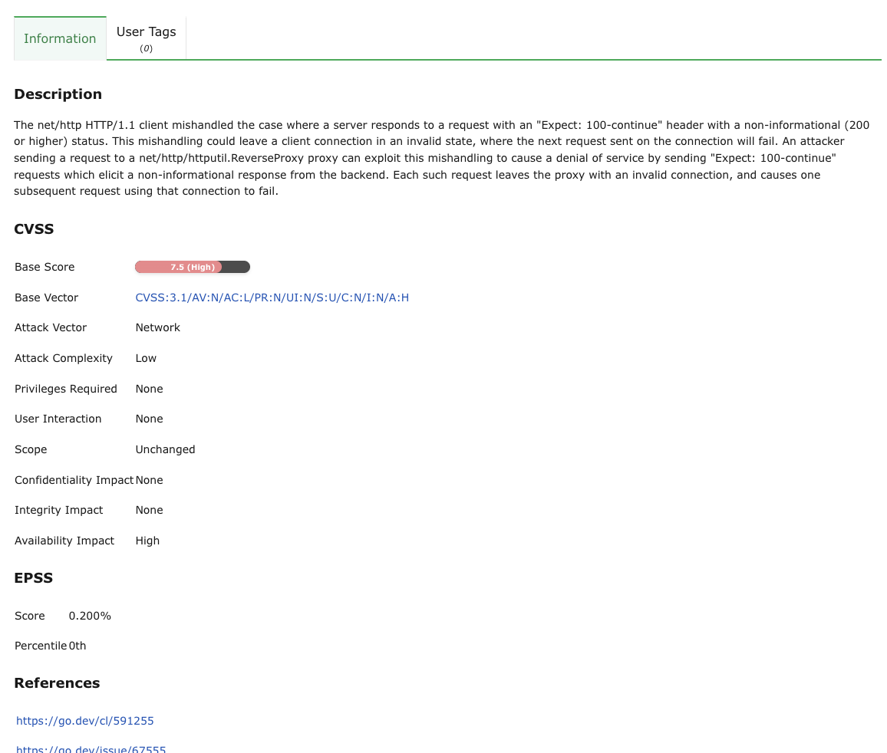
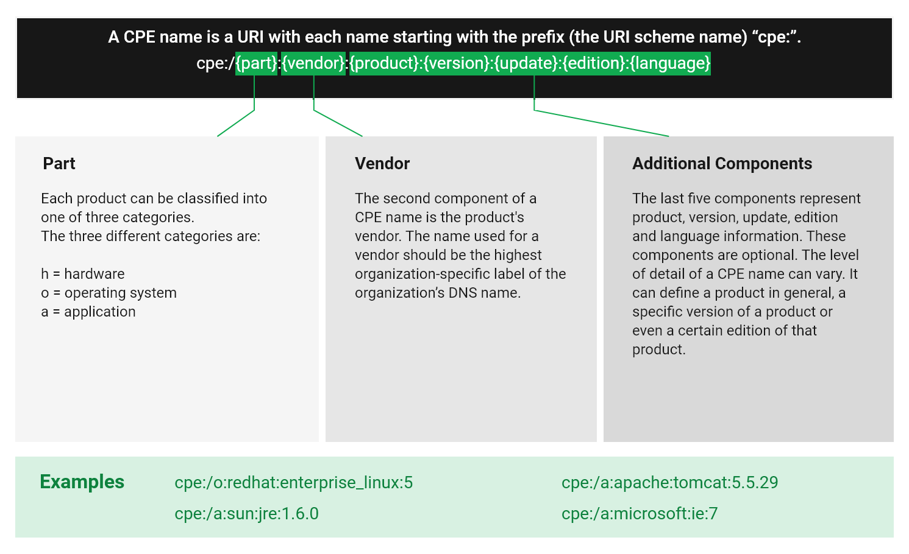
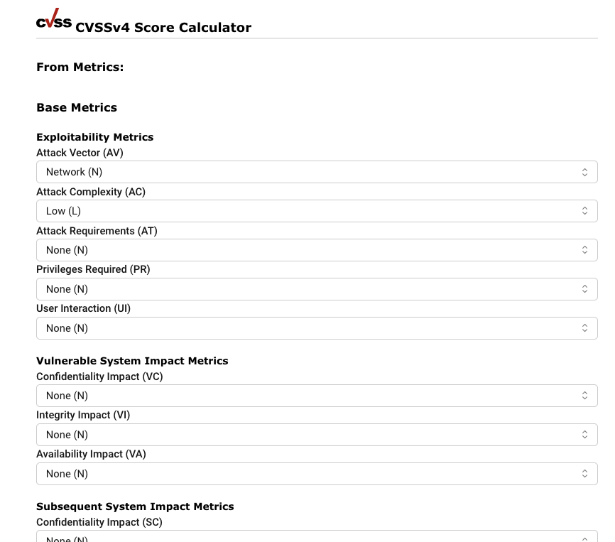

13 Управление информацией о безопасности¶
Управление SecInfo обеспечивает централизованный доступ к широкому спектру информации о безопасности информационных технологий (ИТ), включая следующие категории:
- Тесты уязвимостей (VT)
Наличие VT означает наличие системы на наличие уязвимостей.
- Распространенные уязвимости и риски (CVE)
CVE — это уязвимости, опубликованные поставщиками и исследователями безопасности.
- Платформа перечисления (CPE)
CPE предлагает стандартизированные названия продуктов, внедрения в ИТ.
- Рекомендации CERT-Bund
Рекомендации CERT-Bund публикуются CERT-Бунд, Группа реагирования на компьютерные чрезвычайные ситуации Федеральное управление информационной безопасности Германии (BSI) (немецкий: Bundesamt für Sicherheit в der Informationstechnik, сокращенно BSI). Основным фактором CERT-Bund является функция службы ретрансляции и информации, публикующая информацию о новых уязвимостях и рисках безопасности, а также угрозах для ИТ-систем.
- Рекомендации DFN-CERT
Рекомендации DFN-CERT публикуются ДФН-СЕРТ [только на немецком языке], Группа реагирования на компьютерные ситуации Немецкая национальная сеть исследований и образования (Немецкий: Deutsches Forschungsnetz, сокращенно DFN).
CVE и CPE публикуются и становятся доступными Национальный институт стандартов и технологий (NIST) как часть Уязвимости национальной базы данных (НВД) (см. главу 13.2).
Примечание
«Ак Шумкар» также предлагает все данные SecInfo онлайн, доступные через Портал СекИнфо. Портал SecInfo предоставляет всю информацию SecInfo, описанную в следующих главах, а также калькулятор CVSS.
Доступ к Порталу SecInfo осуществляется посредством активации гостевого доступа (см. гл. 8.1.4).
13.1 Тесты уязвимостей (VT)¶
VT — это тестовые программы, используемые в качестве инструмента. Они являются частью AK-SHUMKAR ENTERPRISE FEED, которая регулярно обновляется. VT включает информацию о дате разработки, важных компонентах, уязвимостях и способах их ограничения.
Страница списка
Все явления ВТ можно отобразить, выбрав SecInfo > НТВ в меню.
Для всех ВТ отображается следующая информация:
- Имя
Название ВТ.
- Семья
Семейство ВТ, к чему принадлежит ВТ.
- Созданный
Дата и время создания.
- Модифицированный
Дата и время последнего изменения.
- CVE
CVE, который недавно начал использовать VT.
Если с VT связано несколько CVE, применяются следующие правила:
Отображается CVE с достаточной степенью серьезности.
Если несколько CVE имеют одинаковую длину, то из этих CVE отображается CVE с индексом EPSS.
Если несколько CVE также имеют одинаковую оценку EPSS, то из CVE будет CVE с этими последними изменениями.
Если в нескольких экземплярах CVE были внесены одиночные изменения, при введении всех этих CVE.
- Тип решения

Тип мер по устранению уязвимостей. существуют следующие типы решений:
 Исправление поставщика: доступна информация об официальных исправлениях, выпущенном исходным поставщиком такого продукта.
Если не указано иное, укажите, что это исправление полностью учитывает уязвимость.
Исправление поставщика: доступна информация об официальных исправлениях, выпущенном исходным поставщиком такого продукта.
Если не указано иное, укажите, что это исправление полностью учитывает уязвимость. Обходной путь: доступная информация о конфигурации или конкретных файлах развертывания, которые можно использовать, чтобы избежать уязвимостей.
Обычно это «первая линия защиты» от новых уязвимостей до того, как они были выпущены или даже обнаружены меры по ее устранению или исправлению поставщика.
Обходной путь: доступная информация о конфигурации или конкретных файлах развертывания, которые можно использовать, чтобы избежать уязвимостей.
Обычно это «первая линия защиты» от новых уязвимостей до того, как они были выпущены или даже обнаружены меры по ее устранению или исправлению поставщика. Смягчение: доступна информация о конфигурации или заданных файлах развертывания, которая помогает снизить риск уязвимости, но не использует уязвимость в данном продукте.
Смягчение: доступна информация о конфигурации или заданных файлах развертывания, которая помогает снизить риск уязвимости, но не использует уязвимость в данном продукте. Не исправляет: исправлений уязвимостей нет и никогда не будет.
Это часто происходит, когда продукт теряет свою актуальность, больше не соответствует или устаревает иным образом.
Информация должна содержать подробную информацию о том, почему исправления не будут опубликованы.
Не исправляет: исправлений уязвимостей нет и никогда не будет.
Это часто происходит, когда продукт теряет свою актуальность, больше не соответствует или устаревает иным образом.
Информация должна содержать подробную информацию о том, почему исправления не будут опубликованы. Нет: в настоящее время исправлений нет.
Информация должна содержать подробную информацию о том, почему нет исправлений.
Нет: в настоящее время исправлений нет.
Информация должна содержать подробную информацию о том, почему нет исправлений.
- Серьезность
Качественная мера серьезности уязвимостей согласно Общей системе обнаружения уязвимостей (CVSS) (см. главу) 13.2.3). Эта оценка серьезности, которая включает в себя число от 0,0 до 10,0, где 10,0 соответствует самой серьезной степени, а также серьезному классу, основанному на этом измерении:
Критический: 9,0–10,0
Высокий: 7,0–8,9
Средний: 4,0–6,9
Низкий: 0,1–3,9
Журнал: 0.0
Если с VT связано несколько CVE, отображается серьезность CVE с самой высокой степенью серьезности.
- QoD
Сокращение от «Качество обнаружения». QoD характеризует надежность выполненного обнаружения уязвимостей. Это значение от 0% до 100%, вариант 100% является наиболее надежным.
По умолчанию предоставлены только результаты, Обнаруженные VT с QoD 70 % или выше. Фильтр можно настроить для отображения результатов с более низким качеством QoD (см. главу) 7.3.1).
Для получения дополнительной информации см. главу 10.2.6.
- ЭПСС
Мера вероятности использования уязвимостей в соответствии с системой оценки эксплойтов (EPSS) (см. главу 13.2.4).
Оценочные показатели уязвимости области использования, наблюдаемые в течение следующих 30 дней, представляют собой число от 0 до 1. Чем выше значение, тем больше опасений того, что уязвимость действительно будет использована.
Процент показывает долю уязвимостей, которые были оценены так же или ниже, чем уязвимость. Это помогает перенести счет в контекст.
Примечание
Нажав  под списком ВТ можно экспортировать более одного ВТ одновременно. Раскрывающийся список используется для выбора внешних виртуальных машин.
под списком ВТ можно экспортировать более одного ВТ одновременно. Раскрывающийся список используется для выбора внешних виртуальных машин.
Страница раскрыта
Нажмите на имя ВТ, чтобы отобразить подробную информацию о ВТ. Нажмите  чтобы открыть страницу сведений о ВТ.
чтобы открыть страницу сведений о ВТ.
Доступны следующие вкладки:
- Информация
Общие сведения о ВТ.
- Предпочтения
Предпочтения ВТ (см. главу 9.9.5).
- Пользовательские теги
Присвоенные теги (см. главу 7.4).
В левом верхнем углу пульта доступны следующие действия:
 Ознакомьтесь с соответствующим главой руководства пользователя.
Ознакомьтесь с соответствующим главой руководства пользователя. Показать страницу списка всех VT.
Показать страницу списка всех VT.- Экспортируйте VT как файл XML.
 Сделайте новую заметку для ВТ (см. главу 10.7.1).
Сделайте новую заметку для ВТ (см. главу 10.7.1). создать новое переопределение для VT (см. главу 10.8.1).
создать новое переопределение для VT (см. главу 10.8.1). Покажите соответствующие результаты.
Покажите соответствующие результаты. Укажите соответствующую уязвимость.
Укажите соответствующую уязвимость.
13.2 Протокол автоматизации контента (SCAP)¶
Национальный институт стандартов и технологий (NIST) обеспечивает Национальная база данных уязвимостей (НВД). ПНВ — это хранилище данных для управления уязвимостями правительства США. Целью является стандартизированное предоставление данных для автоматизированной обработки. Тем не менее, эти задачи решают проблемы уязвимостей и, в конечном итоге, обеспечивают соблюдение руководящими принципами соблюдения норм.
ПНВ предоставляет различные базы данных, включая следующие:
Контрольные управления
Уязвимости
Неправильные конфигурации
Продукты
Метрики угрозы
НВД использует Протокол автоматизации контента (СКАП). SCAP представляет собой комбинацию различных совместимых стандартов. Многие стандарты были разработаны или получены в результате общественного обсуждения.
Участие в разработке является соблюдением аспекта принятия и стандарта безопасности SCAP. SCAP в настоящее время указан в версии 1.3 и включает в себя следующие компоненты:
- Языки
XCCDF: Формат описания контрольной таблицы регулируемой конфигурации
ОВАЛ: открытый язык уязвимостей и оценок
OCIL: интерактивный язык открытого контрольного списка
Идентификация активов
АРФ: Независимость формата в активах
- Коллекции
CCE: перечисление общих схем
CPE: общая платформа перечисления
CVE: распространенные уязвимости и уязвимости
- Метрики
CVSS: Общая система поиска уязвимостей
CCSS: Общая система оценки конфигурации
- Честность
TMSAD: модель надежности для безопасности и автоматизации данных
OVAL, CCE, CPE и CVE являются торговыми марками NIST.
АК-ШУМКАР использует CVE, CPE и CVSS. Используйте настоящие стандарты совместимости с другими источниками питания. Стандарты также способствуют достижению прогрессивных результатов.
Системы обнаружения уязвимостей, такие как АК-ШУМКАР, могут быть проверены NIST соответственно. Прибор прошел валидацию по СКАП версия 1.0.
13.2.1 CVE¶
Во избежание множественного наименования одних и тех же уязвимостей со стороны других организаций и обеспечения единых соглашений об именах, МИТРА появление Распространенные уязвимости и риски (CVE) программа. Каждая уязвимость соответствует уникальному идентификатору MITRE или способу нумерации устройства CVE, например, поставщикам продуктов, включая координаты или анализ. Этот идентификатор соответствует годам выпуска и простого номера и служит центральной ссылке.
CVE публикуются и становятся доступными Национальный институт стандартов и технологий (NIST) в Национальная база данных уязвимостей (НВД). NVD выполняет информацию CVE по ликвидации, серьезности, обработке воздействий и уязвимостей продуктов.
«Ак Шумкар» относится к ПНВ, и это решение конференции, информация CVE, VT и рекомендации CERT-Bund/DFN-CERT.
Страница списка
Во всех случаях CVE можно отобразить, выбрав Информация > CVE в меню.
Примечание
Доступность CVE на устройстве зависит от его доступности в NVD. Как только он там будет опубликован, он будет находиться в SecInfo в течение 1–2 рабочих дней.
Столбцы типа Серьезность или ЭПСС может отобразить Н/Д по одной из следующих причин:
CVE был опубликован, но NVD до сих пор не провел анализ уязвимостей/оценку серьезности. Это может занять от нескольких дней до нескольких недель.
Такие CVE можно определить при осмотре соответствующая запись ПНВ. Пока нет в наличии показывать для серьезности, Н/Д отображает серьезную неисправность устройства.
Между анализом уязвимостей/оценкой серьезности и моментом публикации обновленной информации в управлении SecInfo всегда проходит задержку в течение 1–2 рабочих дней.
Наличие CVE на устройстве не означает, что на нем также действует действие VT.
Чтобы определить, покрыта ли конкретная CVE, фильтр cve=<CVE-ID> можно использовать на НТВ страница (см. главу 13.1).
- Имя
Уникальный идентификатор CVE, образующийся из года выпуска и простого номера.
- Описание
Расширенная информация о CVE. Это может быть включено, в любой версии возникает уязвимость, как она возникает, и как ее могут использовать злоумышленники.
- Опубликовано
Дата и время публикации CVE в NVD.
- Базовый вектор CVSS
Вектор CVSS, прогноз для расчета сложности CVE. Этот вектор включает версию CVSS, специально для CVE.
Нажав на вектор, страница Калькулятор оценок CVSSv2/CVSSv3/CVSSv4 (базовый) открыт. Поле соответствующего калькулятора уже заполнено, в зависимости от того, какая версия CVSS используется для расчета серьезности CVE (см. главу) 13.2.3).
- Серьезность
Качественная мера серьезности уязвимостей согласно Общей системе обнаружения уязвимостей (CVSS) (см. главу) 13.2.3). Эта оценка серьезности, которая включает в себя число от 0,0 до 10,0, где 10,0 соответствует самой серьезной степени, а также серьезному классу, основанному на этом измерении:
Критический: 9,0–10,0
Высокий: 7,0–8,9
Средний: 4,0–6,9
Низкий: 0,1–3,9
Журнал: 0.0
- ЭПСС
Мера вероятности использования уязвимостей в соответствии с системой оценки эксплойтов (EPSS) (см. главу 13.2.4).
Оценочные показатели уязвимости области использования, наблюдаемые в течение следующих 30 дней, представляют собой число от 0 до 1. Чем выше значение, тем больше опасений того, что уязвимость действительно будет использована.
Процент показывает долю уязвимостей, которые были оценены так же или ниже, чем уязвимость. Это помогает перенести счет в контекст.
Примечание
Нажав под списком CVE можно экспортировать более одного CVE одновременно. Раскрывающийся список используется для выбора экспортируемых CVE.
Страница раскрыта
Нажмите на название CVE, чтобы отобразить подробную информацию о CVE. Нажмите чтобы открыть страницу сведений о CVE (см. Рис. 13.1).


Рис. 13.1 Страница с описанием CVE¶
Доступны следующие вкладки:
- Информация
Общие сведения о CVE.
- Пользовательские теги
Присвоенные теги (см. главу 7.4).
В левом верхнем углу пульта доступны следующие действия:
- Ознакомьтесь с соответствующим главой руководства пользователя.
- Показать страницу списка всех CVE.
- Экспортируйте CVE как файл XML.
13.2.2 цена взаимодействия¶
Common Platform Enumeration (CPE) — это структурированная схема именования систем, платформ и пакетов информационных технологий. Основанный на общем синтаксисе ресурсов унифицированных идентификаторов (URI), CPE включает формальный формат имени, язык для описания платформы платформы, метод проверки имен в системе соответствия и формат описания для привязки текста, а также тесты по имени.
CPE публикуются и становятся доступными Национальный институт стандартов и технологий (NIST) в Национальная база данных уязвимостей (НВД).
Имя CPE начинается с «cpe:/», после чего последующие семь частей, разделенных двоеточиями (см. Рис. 13.2).


Рис. 13.2 Структура имени CPE¶
Сочетание стандартов CPE и CVE позволяет сделать вывод о существующих уязвимостях при обнаружении платформенного продукта.
Страница списка
Все события CPE можно отобразить, выбрав Информация > CPE в меню.
Примечание
Доступность CPE на устройстве зависит от его доступности в NVD. Как только он там будет опубликован, он будет находиться в SecInfo в течение 1–2 рабочих дней.
Примечание
Нажав под списком CPE можно экспортировать более одного CPE одновременно. Раскрывающийся список используется для выбора экспортируемого CPE.
Страница раскрыта
Нажмите на имя CPE, чтобы отобразить подробную информацию о CPE. Нажмите чтобы открыть страницу сведений о CPE.
Доступны следующие вкладки:
- Информация
Общие сведения о ЦПЭ.
- Пользовательские теги
Присвоенные теги (см. главу 7.4).
В левом верхнем углу пульта доступны следующие действия:
- Ознакомьтесь с соответствующим главой руководства пользователя.
- Показать страницу списка всех CPE.
- Экспортируйте CPE как файл XML.
13.2.3 CVSS¶
Общая система обнаружения уязвимостей (CVSS) — это отраслевой стандарт для серьезного описания рисков безопасности в компьютерном обслуживании.
Риски безопасности связаны и сравниваются с использованием различных способов. Это позволяет создать приоритетный список контрмеров.
CVSS разработан компанией Специальная группа по интересам CVSS (CVSS-SIG) следствий Форум групп по реагированию на инциденты и безопасность (ПЕРВЫЙ). Текущая версия CVSS — 4.0.
GOS 24.10 поддерживает CVSS v4.0. Поскольку CVSS v4.0 все еще находится на ранних стадиях общеотраслевого развития, данные CVSS v4.0 пока доступны в ближайшее время. VT и CVE могут сохранять данные CVSS v2 и/или CVSS v3.0/v3.1.
Если VT/CVE содержит как данные CVSS v2, так и данные CVSS v3.0/v3.1, данные CVSS v3.0/v3.1 всегда используются и указываются.
Базовый вектор CVSS Представленный предварительный просмотр и запись на странице о регистрации VT могут быть версии v2, v3.0 или v3.1.
Базовый вектор CVSS показано в таблице на странице CVE может быть v2, v3.0 или v3.1. Нажатие на базовый вектор CVSS открывает страницу. Калькулятор оценок CVSSv2/CVSSv3/CVSSv4 (базовый). Поле ввода соответствующего калькулятора уже заполнено.
Классы серьезности всегда разрабатываются в соответствии с CVSS v3.0/v3.1, даже если VT/CVE содержит только данные v2.
Критический: 9,0–10,0
Высокий: 7,0–8,9
Средний: 4,0–6,9
Низкий: 0,1–3,9
Журнал: 0.0
Оценка CVSS поддерживает метрики координатной точки, метрики временной температуры и метрики температуры окружающей среды.
- Базовые показатели оценки
Метрики местоположения оценивают возможность использования уязвимостей и ее влияние на целевую систему. Оцениваются доступ, сложность и требования аутентификации. Кроме того, их поддержка находится под угрозой конфиденциальности, честности или доступности.
- Метрики временной оценки
Метрики временной оценки проверяют, существует ли завершенный пример кода, поставщик уже исправил исправления и обнаружил уязвимость. В течение времени счет будет кардинально меняться.
- Показатели собственных оценок
Метрики, связанные с обнаружением какого-либо эффекта уязвимости внутри организации. Они учитывают ущерб, целевое значение, конфиденциальность, честность и доступность. Эта оценка сильно зависит от среды, в которой используется уязвимый продукт.
Поскольку результаты определения местоположения имеют лишь общий смысл и могут постоянно контролироваться, устройство предоставляет их как часть данных SecInfo.
Калькулятор CVSS можно открыть, выбрав Справка > Калькулятор CVSS в меню (см. Рис. 13.3). Отобразятся калькулятор для CVSS версии 2.0, калькулятор для CVSS версии 3.0/3.1 и калькулятор для CVSS версии 4.0.


Рис. 13.3 Калькулятор CVSS для расчета оценок серьезности¶
13.2.3.1 CVSS версия 2.0¶
Следующая формула использует калькулятор CVSS версии 2.0:
Базовый балл = roundTo1Decimal( ( ( 0.6 * Влияние ) +
( 0.4 * Возможность использования ) - 1.5 ) * ж( Влияние ) )
«Воздействие» рассчитывается следующим образом:
Влияние = 10.41 * (1 - (1 - КонфИмпакт) *
(1 - ИнтегИмпакт) * (1 - ДоступностьВлияние))
«Эксплуатируемость» рассчитывается следующим образом:
Возможность использования = 20 * Аксессвектор * ДоступСложность * Аутентификация
Примечание
Функция е( Влияние ) равно 0, если воздействие равно 0.
Во всех остальных случаях значение равно 1176.
Остальные значения являются константами:
- Вектор доступа
Требуется локальный доступ: 0,395
Доступность соседней сети: 0,646
Доступ к сети: 1.0
- Сложность доступа
Высокий: 0,35
Средний: 0,61
Низкий: 0,71
- Аутентификация
Требуется несколько экземпляров аутентификации: 0,45.
Требуется один экземпляр аутентификации: 0,56.
Не требует аутентификации: 0,704
- КонфИмпакт
Нет: 0,0
Частичное: 0,275
Завершено: 0,660
- ИнтегИмпакт
Нет: 0,0
Частичное: 0,275
Завершено: 0,660
- ДоступностьВлияние
Нет: 0,0
Частичное: 0,275
Завершено: 0,660
13.2.3.2 CVSS версии 3.0/3.1¶
Следующая формула использует калькулятор CVSS для версии 3.0/3.1:
* Если Влияние <= 0, Базовый балл = 0
* Если Объем является «Без изменений»:
Базовый балл = Округлять (Минимум ((Влияние + Возможность использования), 10))
* Если Объем является "Измененный":
Базовый балл = Округлять (Минимум (1.08 * (Влияние + Возможность использования), 10))
«ИСС» (подоценка воздействия) рассчитывается следующим образом:
МКС = 1 - ((1 - Конфиденциальность) * (1 - Честность) * (1 - Доступность))
«Воздействие» рассчитывается следующим образом:
* If Scope is "Unchanged":
Impact = 6.42 * ISS
* If Scope is "Changed":
Impact = 7.52 * (ISS - 0.029) - 3.25 * (ISS - 0.02)¹⁵
«Эксплуатируемость» рассчитывается следующим образом:
Возможность использования = 8.22 * Атака Вектор * Атака Количество
* Привилегии Необходимый * Пользователь Взаимодействие
Остальные значения являются константами:
- Вектор воздействия
Сеть: 0,85
Рядом: 0,62
Местный: 0,55
Физический: 0,2
- Сложность обработки
Низкий: 0,77
Высокий: 0,44
- Требуемые привилегии
Нет: 0,85
Низкий: 0,62 (или 0,68, если область действия «Изменена»)
Высокий: 0,27 (или 0,5, если область действия «Изменена»)
- Взаимодействие с пользователем
Нет: 0,85
Требуется: 0,62
- Конфиденциальность
Нет: 0,0
Низкий: 0,22
Высокий: 0,56
- Честность
Нет: 0,0
Низкий: 0,22
Высокий: 0,56
- Доступность
Нет: 0,0
Низкий: 0,22
Высокий: 0,56
13.2.3.3 CVSS версии 4.0¶
Примечание
ГОС 24.10 поддерживает CVSS 4.0. Однако, поскольку CVSS v4.0 все еще находится на начальной стадии общеотраслевых данных, CVSS v4.0 пока доступна в наличии.
Калькулятор CVSS уже доступен для CVSS v4.0. Расчет, использованный для версии 4.0, описан в эта документация.
13.2.4 ЭПСС¶
Чтобы оценить уязвимость использования, была изобретена система оценки эксплойтов (EPSS). EPSS оценивает возможные уязвимости при эксплуатации, наблюдение в течение 30 дней.
EPSS, разработанная компания Специальная группа по интересам EPSS (EPSS-SIG) следствий Форум групп по реагированию на инциденты и безопасность (ПЕРВЫЙ). Текущая версия EPSS — 3.0.
EPSS рассчитывает условия эксплуатации в течение следующих 30 дней, что представляет собой значение от 0 до 1. Это основные преимущества EPSS. Чем выше значение, тем больше опасностей того, что уязвимость действительно будет использована. Кроме того, EPSS помещает этот рейтинг в контекст, выдавая процент, указывающий долю уязвимостей, которые были оценены так же или ниже, чем уязвимость.
При расчете не учитывается среда, в которой возникает уязвимость, а также какие-либо меры по устранению, которые могут быть приняты. Более того, это значение не дает никакой информации о влиянии на эксплуатацию.
Данные EPSS обновляются ежедневно для всех опубликованных CVE.
13.3 Рекомендации CERT-Bund¶
CERT-Бунд, Группа реагирования на компьютерные чрезвычайные ситуации Федеральное ведомство информационной безопасности Германии (BSI) является центральным контактным лицом по вопросам предотвращения и реагирования на компьютерные инциденты, связанные с безопасностью.
С целью избежать вреда и оценить потенциальный ущерб работа CERT-Bund включает в себя следующее:
Разработка и внедрение рекомендаций по профилактическим мерам
Выявление уязвимостей в аппаратных и программных продуктах
Предложение мер по устранению известных уязвимостей
Поддержка правительственных органов по реагированию на инциденты ИТ-безопасности
Рекомендация различных мер по смягчению последствий
Тесно сотрудничая с Национальный ИТ-ситуационный центр и Национальный центр реагирования на ИТ-кризисы
Услуги CERT-Bund в первую очередь доступны федеральным органам власти и включают следующее:
Круглосуточное дежурство в Великобритании с Ситуационным центром ИТ
Анализ полученных отчетов о происшествиях
Разработка рекомендаций на основе инцидентов
Поддержка федеральных органов власти во время инцидентов ИТ-безопасности
Работа службы информации и информации
Геометрическое оповещение федеральной администрации в случае опасности
CERT-Bund предлагает услуги по анализу и информации (нем. Warn- und Informationsdienst, сокращенно WID). В настоящее время этот сервис предлагает два различных типа информации:
- Рекомендации
Эта информационная служба доступна только федеральным агентствам в закрытом списке. В рекомендациях опишите текущую информацию о серьезных нарушениях безопасности в компьютерной сфере и последующие меры по устранению угроз безопасности.
- Краткая информация
Краткая информация представляет собой краткое описание текущей информации о рисках безопасности и уязвимостях. Эта информация не всегда проверена и может быть неполной или даже неточной.
AK-SHUMKAR ENTERPRISE FEED содержит уменьшенную информацию CERT-Bund. Обеспечьте информацию в старый формат [Только на немецком языке] (до июня 2022 г.) и информация в новый формат [Только на немецком языке] (июнь 2022 г.) включено.
Между обоими форматами имеются очень незначительные различия в рекомендательных метаданных. Форматы могут использоваться взаимозаменяемо для всех случаев использования.
старая форма по образцу
CB-KYY/ID, напримерCB-K22/0704.Информация о новой форме по образцу
WID-SEC-ГГГГ-ID, напримерWID-SEC-2022-0311.
Страница списка
Все рекомендации CERT-Bund можно отобразить, выбрав SecInfo > Рекомендации CERT-Bund в меню.
Серьезность, отображаемая для рекомендаций CERT-Bund, не относится непосредственно к рекомендациям. Вместо этого это самая серьезная угроза среди всех CVE, упомянутых в рекомендациях. Если в рекомендациях CERT-Bund не упоминаются CVE, Н/Д объявлена в своей серьезности. Дополнительная информация о CVE и их серьезности. в главах. 13.2.1 и 13.2.3.
Примечание
Нажав под списком рекомендаций CERT-Bund можно экспортировать более одну одну рекомендации CERT-Bund одновременно. Раскрывающийся список используется для выбора внешних стратегий CERT-Bund.
Страница раскрыта
Нажмите на название рекомендации CERT-Bund, чтобы отобразить подробную информацию о рекомендациях CERT-Bund. Нажмите Чтобы открыть страницу, опишите рекомендации CERT-Bund.
Доступны следующие вкладки:
- Информация
Общая информация о рекомендациях CERT-Bund.
- Пользовательские теги
Присвоенные теги (см. главу 7.4).
В левом верхнем углу пульта доступны следующие действия:
- Ознакомьтесь с соответствующим главой руководства пользователя.
- Показать страницу со списком всех рекомендаций CERT-Bund.
- Экспортируйте рекомендации CERT-Bund в видео XML-файл.
13.4 Рекомендации DFN-CERT¶
Хотя разработка VT, CVE и CPE в первую очередь предназначена для обработки компьютерными системами, ДФН-СЕРТ [Только на немецком языке] регулярно публикует новые рекомендации.
DFN-CERT отвечает за расходы университетов и исследовательских институтов, Немецкая научно-образовательная сеть (Немецкий: Deutsches Forschungsnetz, сокращенно DFN). Кроме того, он предоставляет основные услуги в области безопасности правительства и промышленности.
В рекомендациях о особо серьезных угрозах безопасности, требующих быстрого реагирования. Консультативная служба DFN-CERT включает категоризацию, распространение и рекомендации по рейтингу, выпущенным различными поставщиками и дистрибьюторами программного обеспечения. Рекомендации принимаются АК-ШУМКАР и включаются в исходные данные для справки.
Страница списка
Все рекомендации DFN-CERT можно отобразить, выбрав SecInfo > Рекомендации DFN-CERT в меню.
Серьезность, отображаемая для рекомендаций DFN-CERT, не принимается непосредственно из рекомендаций. Вместо этого это самая серьезная угроза среди всех CVE, упомянутых в рекомендациях. Если в рекомендациях DFN-CERT не указан CVE, Н/Д объявлена в своей серьезности. Дополнительная информация о CVE и их серьезности. в главах. 13.2.1 и 13.2.3.
Примечание
Нажав под списком рекомендаций DFN-CERT можно экспортировать более одной рекомендации DFN-CERT одновременно. Раскрывающийся список используется для выбора внешних стратегий DFN-CERT.
Страница раскрыта
Нажмите на название рекомендации DFN-CERT, чтобы отобразить подробную информацию о рекомендациях DFN-CERT. Нажмите Чтобы открыть страницу, опишите рекомендации DFN-CERT.
Доступны следующие вкладки:
- Информация
Общая информация о рекомендациях DFN-CERT.
- Пользовательские теги
Присвоенные теги (см. главу 7.4).
В левом верхнем углу пульта доступны следующие действия:
- Ознакомьтесь с соответствующим главой руководства пользователя.
- Показать страницу со списком всех рекомендаций DFN-CERT.
- Экспортируйте рекомендации DFN-CERT в видео XML-файла.